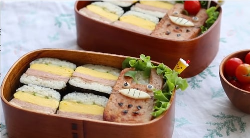
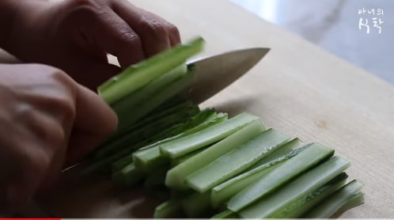
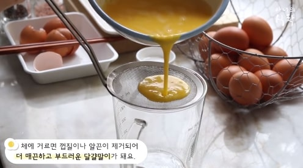
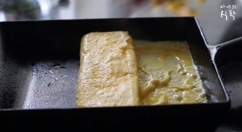
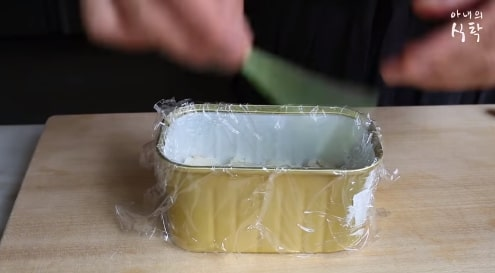

하와이안 무스비
Hawaiian Spam Musubi

재료 : 스팸 1캔, 묵은지 1/4포기, 계란 4~6개, 오이 1/2개, 김밥용 김, 맛술 1큰술,
소금, 후추, 밥 2공기, 참기름
1. 스팸은 같은크기로 5조각으로 썰어주세요.

2. 묵은지와 오이는 6cm길이의 조각으로 썰어주세요.
(사진-1)
3. 예열된 팬에 기름없이 스팸을 구워주세요.

4. 볼에 달걀과 맛술, 소금 1/2 작은술 후추약간을 넣고 섞어주세요.
체에 달걀을 거르면 더 부드러운 달걀말이가 돼요.
(사진-2)

5. 약한 불에서 스팸과 비슷한 두께로 달걀말이를 만들어 주세요.
(사진-3)
6. 볼에 밥, 참기름 약간, 깨 1작은술, 소금 약간을 넣고 섞어주세요.

7. 스팸통에 랩을 깔고 밥-오이-계란말이-스팸-묵은지-밥순서로 담아주세요.
(사진-4)
8. 랩에 싸놓은채로 꺼낸다음 김밥용김을 만들어 놓은 하와이안 무스비
크기에 맞춰 자른후 감아주세요.